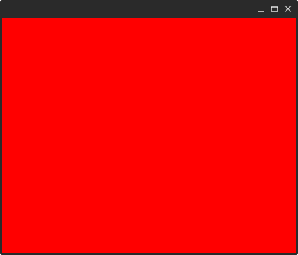

Countries
This Tutorial will walk you threw creating a Qt project using QtGQL from ground up.
This subject of this project will be a QML application that shows countries information using a public GraphQL API that can be found here
Final code at GitHub.
Prerequisites#
- Required by QtGql:
- Python >= 3.8
- CMake
- Required for this tutorial:
- Conan C++ Package manager
- Python-Poetry installed we we'll use it to manage python dependencies for this tutorial though feel free to use any other python package manager.
Project layout#
Create a new directory named countries and setup your git/github.
We will use the "src" + CMake layout.
Setup Build requirements and QtGql#
Add QtGQL as a submodule to 3rdparty directory.
In order to build QtGQL you'll need Qt installed. for this tutorial we will use a conan recipe that will install Qt and set the needed variables for cmake, see the following note.Install Qt
First lets setup Python virtualenv using poetry.
just hitEnter until it is done.
Note
from now on every command should be prefixed with poetry run <command>
Now create this conan recipe. Note that this is not a usauall recipe because
at the moment of creating this tutorial Qt6 wasn't working well with native conan.
./conanfile.py
from __future__ import annotations
import contextlib
import glob
import logging
import os
import subprocess
from functools import cached_property
from pathlib import Path
from typing import ClassVar
from venv import logger
from conan import ConanFile
from conan.tools.cmake import CMake, CMakeDeps, CMakeToolchain, cmake_layout
class PATHS:
PROJECT_ROOT: ClassVar[Path] = Path(__file__).parent
ConanBool = [True, False]
__version__: str = "0.1.0"
class QtGqlCountriesRecipe(ConanFile):
settings = "os", "compiler", "build_type", "arch"
name = "countries"
license = "MIT"
version = __version__
build_policy = "missing"
exports_sources = "CMakeLists.txt", "src/*"
def requirements(self) -> None:
...
def layout(self) -> None:
cmake_layout(self)
@property
def os_name(self):
return self.settings.os.value.lower()
def is_windows(self) -> bool:
return self.os_name == "windows"
def is_linux(self) -> bool:
return self.os_name == "linux"
@cached_property
def qt_version(self) -> str:
return "6.5.0"
@property
def qt_arch(self) -> str:
if self.is_linux():
return "gcc_64"
elif self.is_windows():
return "win64_mingw"
@cached_property
def aqt_install_dir(self) -> Path:
ret = Path.home() / "MyConnandeps" / "Qt"
if not ret.exists():
ret.mkdir(parents=True)
return ret
@property
def qt6_install_dir(self) -> Path | None:
relative_to = self.aqt_install_dir / self.qt_version
if relative_to.exists():
prev = Path.cwd()
os.chdir(relative_to)
res = glob.glob("**/Qt6Config.cmake", recursive=True)
os.chdir(prev)
with contextlib.suppress(IndexError):
p = (relative_to / res[0]).resolve(True)
return p.parent
def generate(self) -> None:
if not self.qt6_install_dir:
subprocess.run(
f"poetry run aqt install-qt {self.os_name} "
f"desktop {self.qt_version} {self.qt_arch} "
f"--outputdir {self.aqt_install_dir} "
f"-m qtwebsockets".split(" "),
).check_returncode()
os.environ.setdefault(
"QT_PLUGIN_PATH",
(self.qt6_install_dir.parent.parent.parent / "plugins").resolve(True).as_uri(),
)
os.environ.setdefault(
"LD_LIBRARY_PATH",
(self.qt6_install_dir.parent.parent.parent / "lib").resolve(True).as_uri(),
)
paths = os.environ.get("PATH").split(":")
paths.append((self.qt6_install_dir.parent.parent.parent / "bin").resolve(True).as_uri())
os.environ.setdefault("PATH", ":".join(paths))
assert self.qt6_install_dir
assert self.qt6_install_dir.exists()
deps = CMakeDeps(self)
deps.generate()
tc = CMakeToolchain(self)
tc.cache_variables["Qt6_DIR"] = str(self.qt6_install_dir)
tc.generate()
def build(self):
cmake = CMake(self)
cmake.configure()
cmake.build()
def package(self):
cmake = CMake(self)
cmake.install()
Now to install Qt run:
To install the QtGQL code-generator we need to add it as a Python dependency.
We'll use Python-Poetry:
Now lets setup CMake.
Content of ./CMakeLists.txt
cmake_minimum_required(VERSION 3.25.0)
set(CMAKE_EXPORT_COMPILE_COMMANDS ON)
project(countries VERSION 0.1.0
LANGUAGES CXX)
set(CMAKE_CXX_STANDARD 20)
set(CMAKE_CXX_STANDARD_REQUIRED ON)
add_subdirectory(3rdparty/qtgql)
find_package(Qt6 REQUIRED COMPONENTS Core Quick)
add_executable(${PROJECT_NAME}
"src/main.cpp"
)
target_link_libraries(${PROJECT_NAME} PRIVATE qtgql::qtgql
Qt6::Core Qt6::Quick
)
Set up a QML window#
Inside main.cpp past this code
#include <QtGui>
#include <QtQuick>
#include "filesystem"
namespace fs = std::filesystem;
int main(int argc, char *argv[]){
QGuiApplication app(argc, argv);
QQmlApplicationEngine engine;
QUrl url((fs::path(__FILE__).parent_path() / "qml" / "main.qml").c_str());
engine.load(url);
return QGuiApplication::exec();
}
Inside main.qml past this code:
import QtQuick
Window{
width: 500;
height: 400;
visible: true;
Rectangle{
anchors.fill: parent;
color: "red";
}
}
Now lets build and run
Now you should see something like this:
Using the countries' schema.#
Create a directory for graphql, we'll call it graphql
Inside graphql create 3 files:
schema.graphqlThis file describes your server schema. (You can use the script below to fill it or copy it from here)operations.graphql- Here you would define your operations.qtgqlconfig.py- Here you would define configurations forqtgql
script to fetch the schema
from pathlib import Path
from graphql import build_client_schema, get_introspection_query, print_schema
import requests
res = requests.post("https://countries.trevorblades.com/", json={"query": get_introspection_query()})
res.raise_for_status()
d = res.json()['data']
client_schema = build_client_schema(d)
schema_file = Path(__file__).parent / "schema.graphql"
schema_file.resolve(True).write_text(print_schema(client_schema))
by now you should have the following tree:
countries
├── 3rdparty
│ └── qtgql
│ ├── <etc>
├── build
│ └── Debug
│ ├── <etc>
├── CMakeLists.txt
├── CMakeUserPresets.json
├── conanfile.py
├── poetry.lock
├── pyproject.toml
└── src
├── graphql
│ ├── operations.graphql
│ ├── qtgqlconfig.py
│ └── schema.graphql
├── main.cpp
└── qml
└── main.qml
Content of qtgqlconfig.py
from pathlib import Path
from qtgqlcodegen.config import QtGqlConfig
config = QtGqlConfig(graphql_dir=Path(__file__).parent, env_name="Countries")
graphql_dir - This would let QtGQL know where to find your schema and operation definition.
- env_name - Will be used to namespace this schema at the generated code to avoid collisions
with other potential schemas.
Writing your first query#
QtGql is heavily relying on operations.
Each operation would generate it's own types that mirror concrete types that would be generated
inside schema.hpp
Inside operations.graphql create an operation that will query for all available countries:
src dir:
Now under src/graphql you should have
the following:
graphql
├── __generated__
│ ├── CMakeLists.txt
│ ├── ContinentQuery.cpp
│ ├── ContinentQuery.hpp
│ └── schema.hpp
├── operations.graphql
├── qtgqlconfig.py
└── schema.graphql
Use the generated code#
First lets link our executable to the generated target.
Update CMakeLists.txt
cmake_minimum_required(VERSION 3.25.0)
set(CMAKE_EXPORT_COMPILE_COMMANDS ON)
project(countries VERSION 0.1.0
LANGUAGES CXX)
set(CMAKE_CXX_STANDARD 20)
set(CMAKE_CXX_STANDARD_REQUIRED ON)
add_subdirectory(3rdparty/qtgql)
find_package(Qt6 REQUIRED COMPONENTS Core Quick)
add_executable(${PROJECT_NAME}
"src/main.cpp"
)
target_link_libraries(${PROJECT_NAME} PRIVATE
qtgql::qtgql
Qt6::Core Qt6::Quick
Countries # Name of our environment
)
#include <QtGui>
#include <QtQuick>
#include <filesystem>
#include <memory>
#include <qtgql/bases/bases.hpp>
#include <qtgql/gqloverhttp/gqloverhttp.hpp>
#include "graphql/__generated__/ContinentQuery.hpp"
namespace fs = std::filesystem;
int main(int argc, char *argv[]){
QGuiApplication app(argc, argv);
QQmlApplicationEngine engine;
// set up an environment
auto env = std::shared_ptr<qtgql::bases::Environment>(
new qtgql::bases::Environment("Countries",
std::shared_ptr<qtgql::bases::NetworkLayerABC>(new qtgql::gqloverhttp::GraphQLOverHttp({"https://countries.trevorblades.com/"})))
);
// Export it
qtgql::bases::Environment::set_gql_env(env);
// Create an operation handler
auto cont_query = Countries::continentquery::ContinentQuery::shared();
cont_query->set_variables(Countries::continentquery::ContinentQueryVariables{.code="EU"});
cont_query->execute();
engine.rootContext()->setContextProperty("query", cont_query.get());
QUrl url((fs::path(__FILE__).parent_path() / "qml" / "main.qml").c_str());
engine.load(url);
return QGuiApplication::exec();
}
main.qml to show the data.
import QtQuick
import QtQuick.Controls
import QtQuick.Controls.Material
ApplicationWindow {id:root
width: 500;
height: 400;
visible: true;
Material.theme: Material.Dark
Material.accent: Material.Orange
property var continent: query?.data?.continent;
ListView{id: countries_view
anchors.fill: parent;
model: root.continent?.countries;
header:Rectangle{
color: Material.color(Material.Indigo)
width: ListView.view.width;
height: 50;
Label{
anchors.centerIn: parent;
text: `Countries in Continent ${root.continent?.name} (${countries_view.count}):`
}
}
delegate: Rectangle{
id: country_delegate
required property var model;
color: (model.index % 2 == 0)? Material.color(Material.Grey): Material.color(Material.BlueGrey)
property var view: ListView.view;
width: view.width;
height: 50;
Label{
anchors.left: parent.left;
property var country: country_delegate.model.data;
text: `${country_delegate.model.index + 1}: ${country.emoji} capital: ${country.capital}`
}
}
}
}